Julio.dev
O basquete faz parte da minha rotina. Gosto tanto da adrenalina de jogar quanto do lado analítico, destrinchando táticas e jogadas.
A arte corre em paralelo com a programação. Dedico meu tempo livre à escrita, criando narrativas, e à música, onde me divirto mixando batidas e sempre procurando a música do momento.
Sou católico, e minha espiritualidade é a base que guia minha ética, caráter e visão de mundo.
Sou fascinado por boas histórias. Consumo muito conteúdo de ficção científica, seja jogando um bom videogame ou acompanhando séries marcantes.
Sites e aplicações web responsivas, com foco em performance e boas práticas.
Interfaces intuitivas e atraentes, pensadas pra experiência e usabilidade.
Dashboards interativos para análise de dados e visualização de informações.
Análise e interpretação de dados para apoiar a tomada de decisão.
Suporte especializado para resolução de problemas e manutenção de sistemas.


.png)
.png)
.png)


.png)

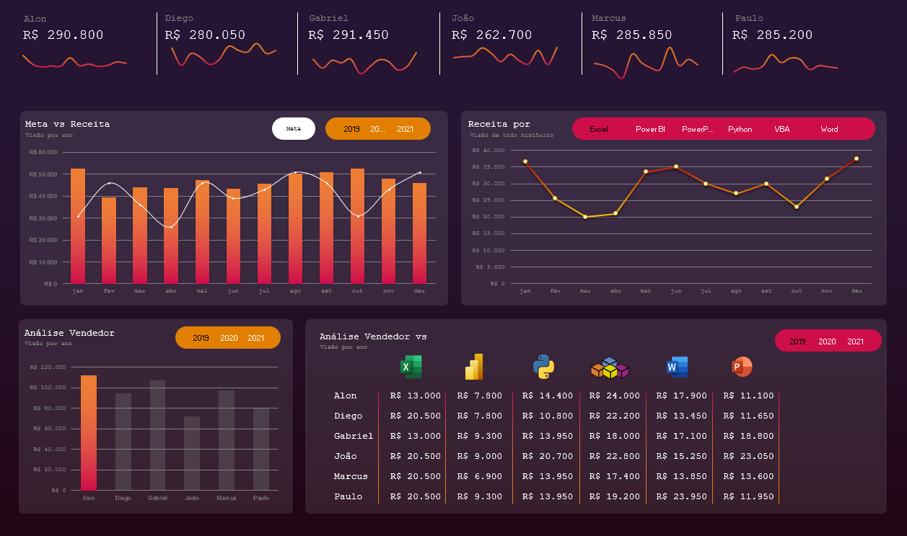
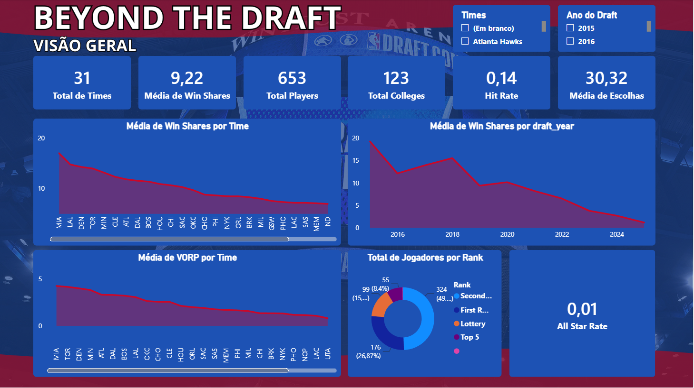
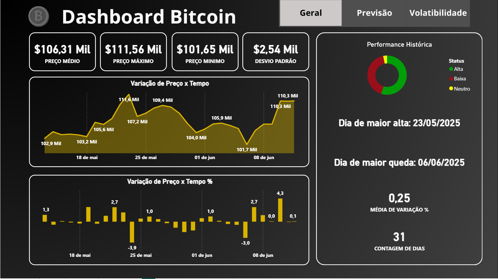
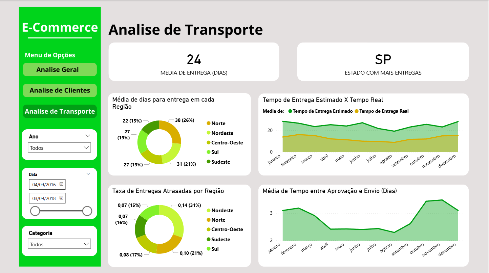
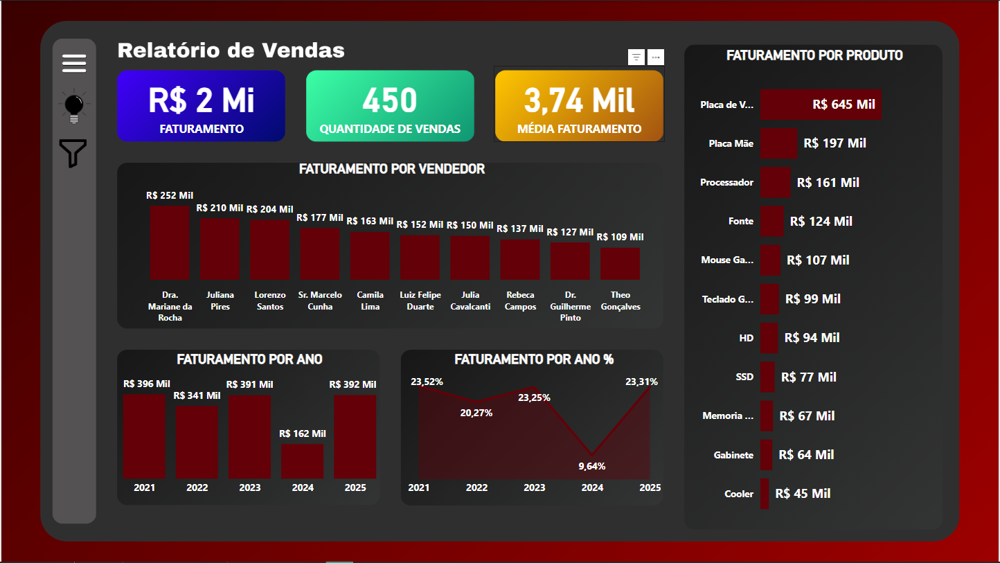
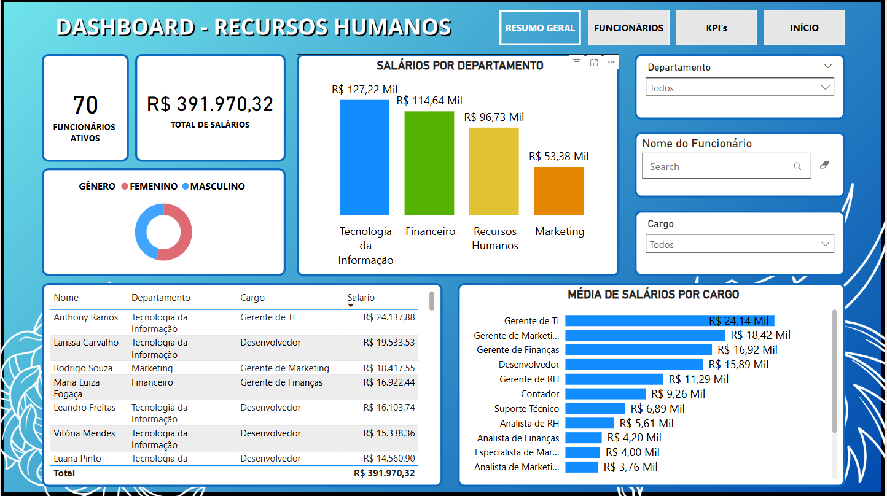
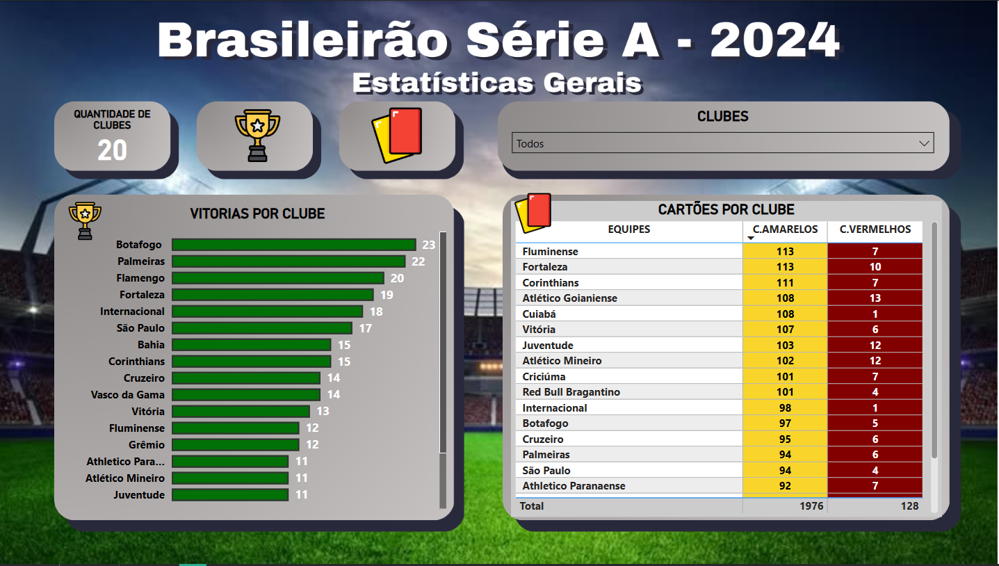
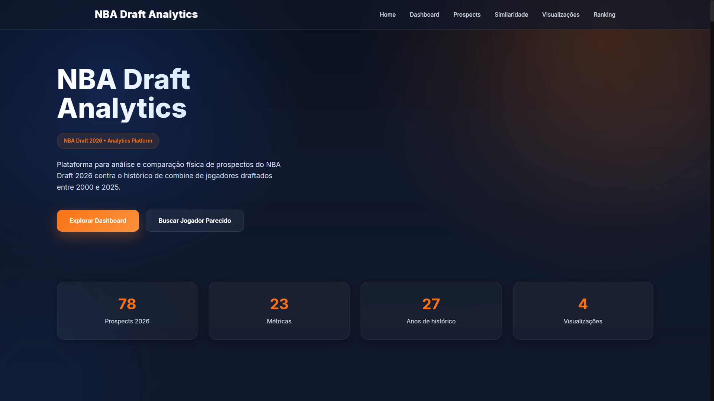
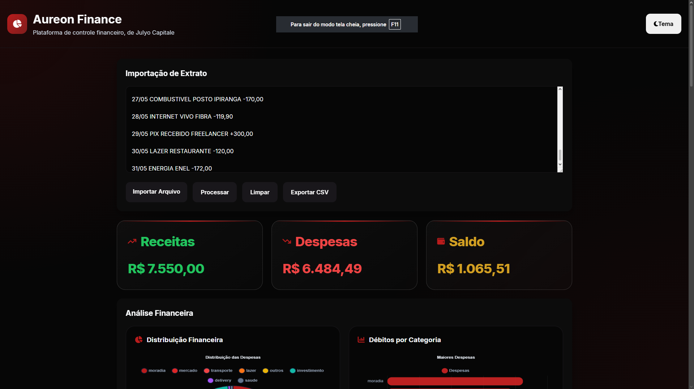
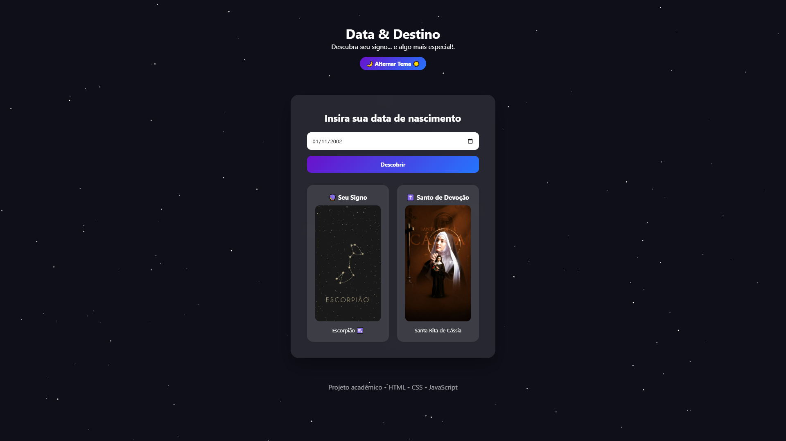
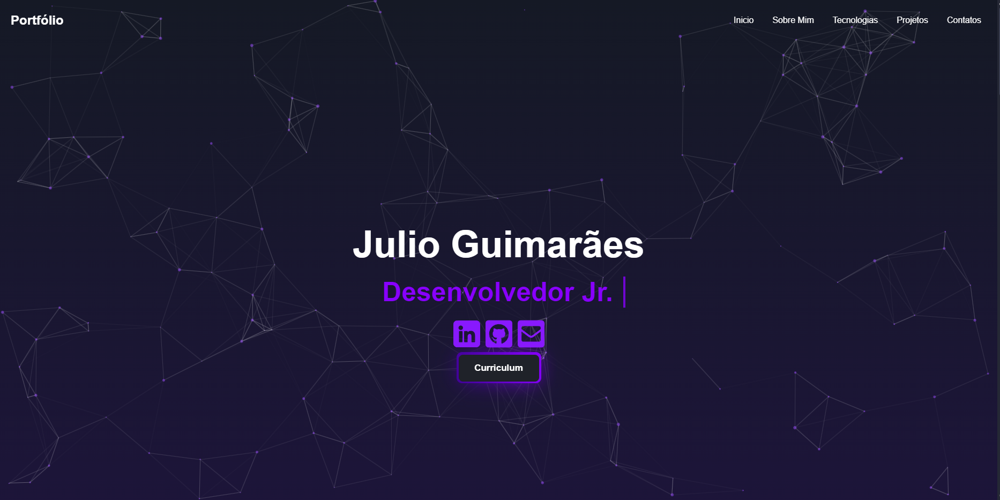
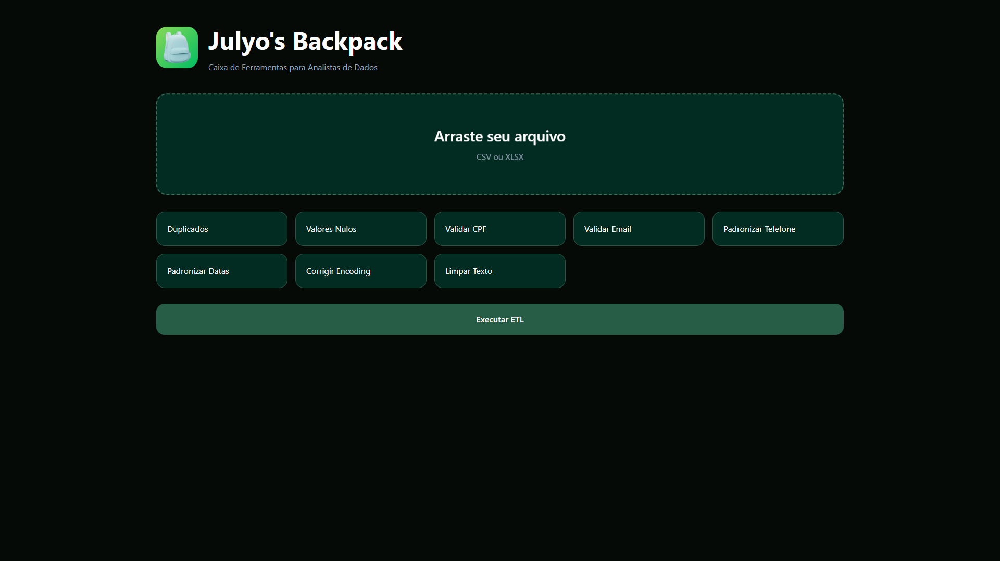
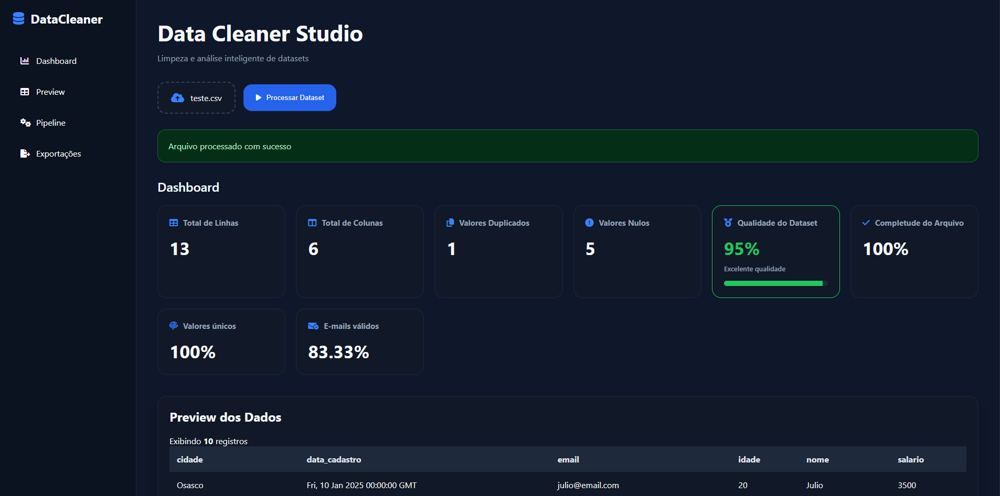
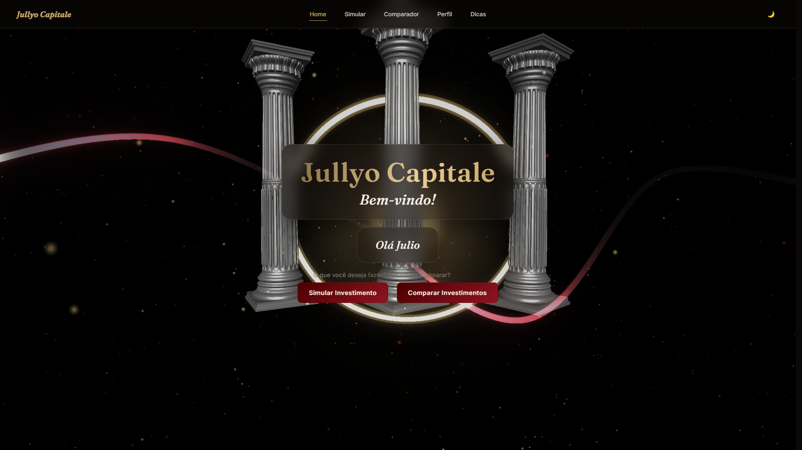
Estou aberto a oportunidades e colaborações. Sinta-se à vontade para entrar em contato comigo para discutir projetos, parcerias ou qualquer outra coisa relacionada ao desenvolvimento de software e análise de dados.
Email: julio.guimaraes2020@outlook.com
LinkedIn: linkedin.com/in/j-guimaraes
GitHub: github.com/Jullyoo